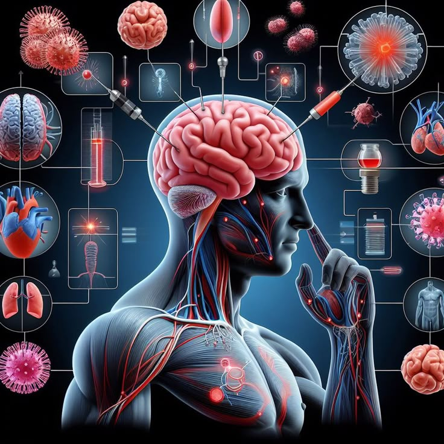
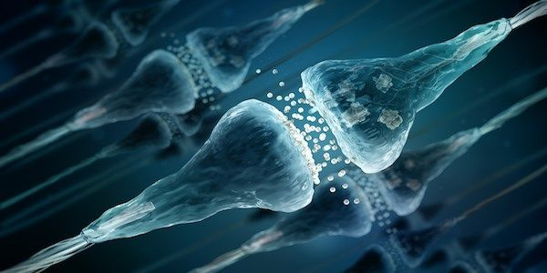
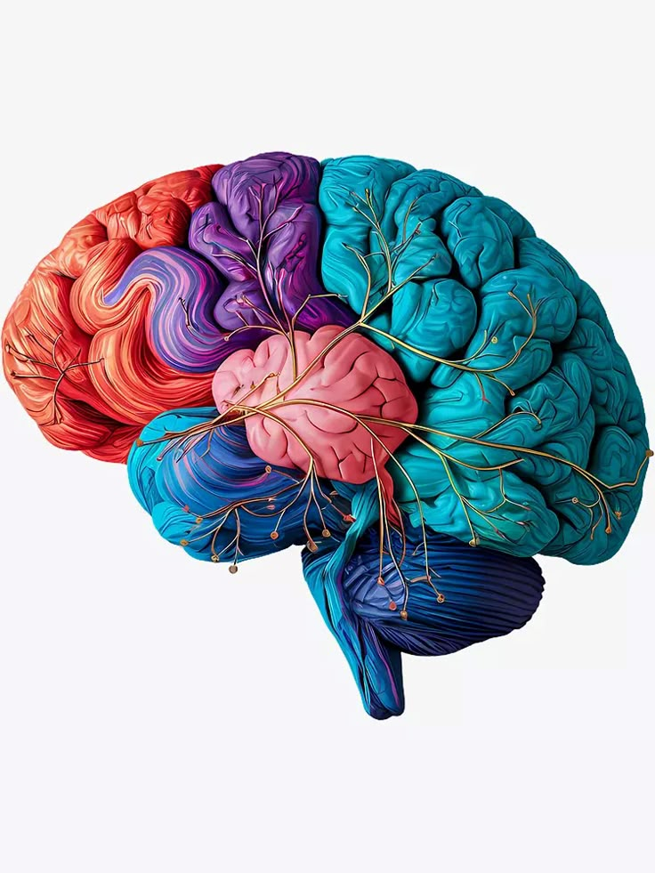
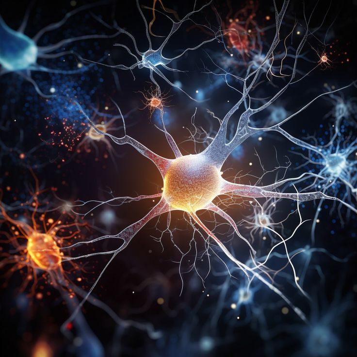
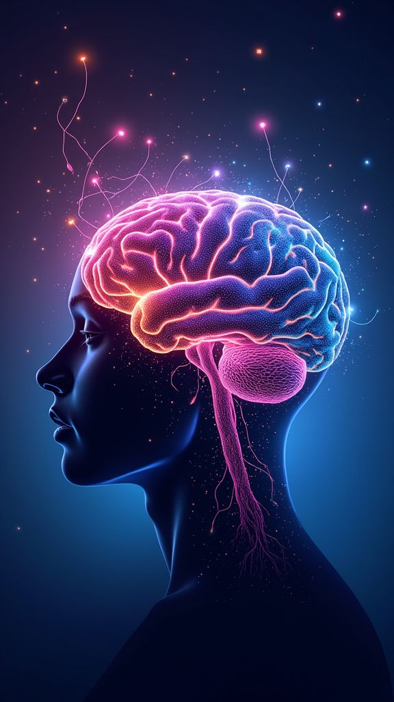
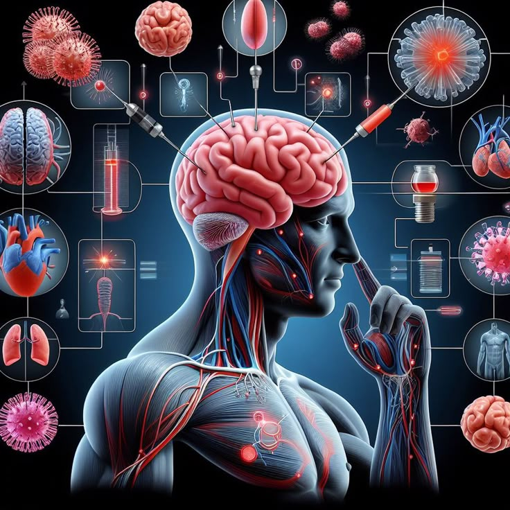
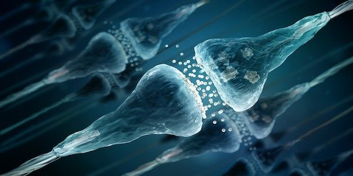

|  |

|
 |
Discover The Fascinating Facts About Human Brain & Neuroscience
Neuroscience is a study devoted to understanding the nervous system and its core component, the brain. This investigation can occur at multiple levels, from molecular synapses and cellular networks to cognition and behavior. Because of this, methods of inquiry and research are drawn from a number of disciplines, including molecular and cellular biology, physiology, biomedicine, behavioral science, cognitive psychology, electrical engineering, computer science and artificial intelligence.
Neuroscientists hope to understand how cellular circuits enable us to read and speak, how we bond with other humans, how we learn and retain information, how we experience pain, and how we feel motivation. They also hope to find causes for devastating disorders of the brain and body, as well as ways to prevent or cure them. Enormous progress has been made but we still don’t understand the full extent of how the brain works.
|  |  |  |
What is Neuroplasticity? Neuroplasticity refers to the brain’s ability to reorganize and form new neural connections in response to experiences, learning, and environmental factors. It is a lifelong process that occurs in various forms, such as synaptic changes, neurogenesis (the birth of new neurons), and changes in functional organization.
Neuroplasticity is a fascinating aspect of brain function that highlights the brain’s remarkable ability to change and adapt. Understanding neuroplasticity offers hope for brain recovery, rehabilitation, and maintaining brain health throughout life. By embracing a brain-healthy lifestyle and leveraging the principles of neuroplasticity, individuals can promote their brain’s adaptability and enhance overall well-being.
|  |
|
 |